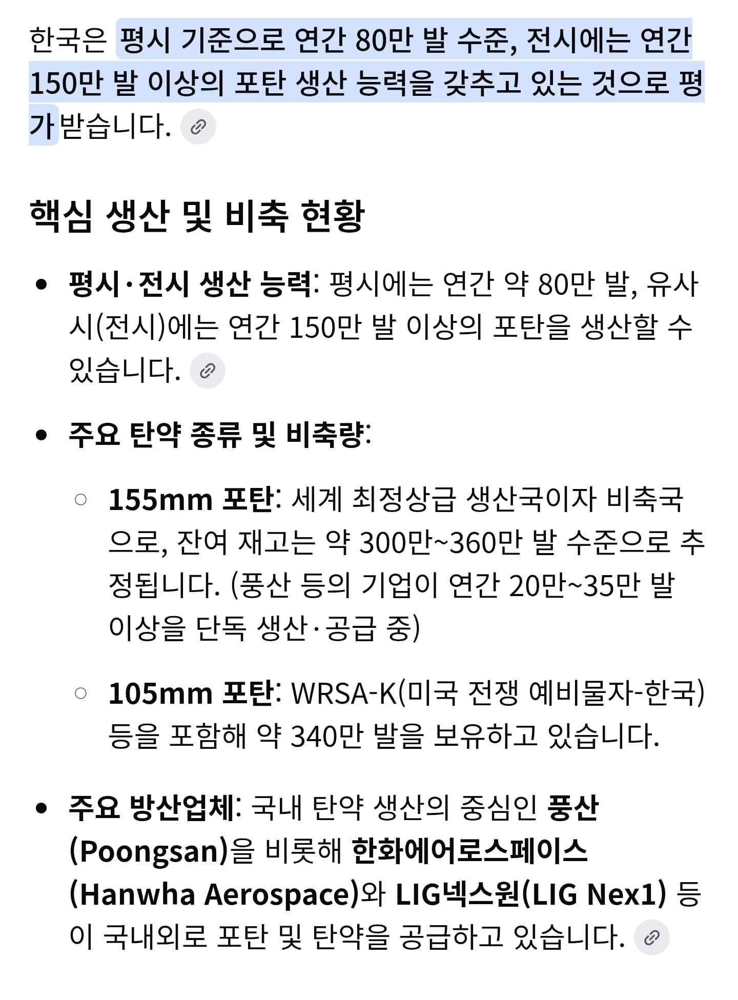

근데 생산능력도 개쩐다며
저 포탄 만들던 애들이 드론 양산하기 시작하면 어떻게될까

근데 생산능력도 개쩐다며
저 포탄 만들던 애들이 드론 양산하기 시작하면 어떻게될까
아직 화력이 좀 부족한데
드론이 뭔의미가있나.. 전쟁나면 걍 초토화여.. 북한애들도 드론안쏘고 포격 존나할거임, 전방있을때 시뮬돌리는데 평당 50발떨어지더라
응? 국평 아파트가 33평아님? 그 좁은데 수천발이 박힌다고?
그럼 시발 아파트 동 하나에만 수만발? 단지하나 규모에 수십만발?
아니 비꼬는게 아니라 진짜 가능한 수치임???ㅋㅋㅋㅋㅋ 암튼 전면전 나는순간 평양은 걍 모든 콘크리트가 가루가 되것네
연면적으로 계산하는건 좀 아닌거같은데
아그래? 난 뭐 잘 몰라서
저숫자는 모르겟지만
전쟁나면 무작위가어니라 각부대 포대마다 우선 공격할 좌표가있음 그 좌표기준아닐까함
그좌표가 중요타켓이면 더 많이 처맞음
나 나온부대는 최전방 포병다대중 한개였는데 전면전 개시하고 5분이내 무력화되는 시나리오만 나옴ㅋㅋ
전역한지 오래되서 용어가 틀릴수도있으니 그냥 느낌만
아하 ㅋㅋㅋㅋㅋㅋㅋ
하 국군장병께는 항상 감사드립니다....
드론테크 빨리 타야하지 않나
화학제품 공장을 전자제품 공장으로 뭔수로 순식간에 전환시키는데
저거 움짤 영화 이름뭐엿지 가서봤던건데 생각이안나네 ㅋㅋㅋㅋㅋ
엔더스 게임
너무궁금해서 이거 페이지 ai쳐보니까 찾아주긴하더라 그래도 답변 감사
그리고 그 드론들을 각 게임 다마챌이 컨트롤 한다면..?
비둘기집의 원리로 몇발을 비축해두든 7일치가된다
테슬라 로드스터에 영감을 받아 플라잉 자주포를 만들겠습니다.
드론은 포탄 없는놈들이 쓰는거 아님?
당연히 다르지. 차 생각량이 좋다고 냉장고 생산량이 느냐?
대규모 생산시설이 있다는게 중요하지
큰 의미가 없음요. 대규모 비타민 제조 시설이 있다고 해서 포탄을 생산할수 있는게 아녀.
차량에들어가는걸 싹다 냉장고로돌리면 가능함
생산자체는 대부분 사출,프레스기때문에
금형만 바꿔끼우고 공차수준만 널널하게잡으면
가능 반도체를 제외한 전자 부품들도 마찬가지고
당장 휴대폰,tv 스틸 내장재 만들던회사도
도면만있으면 1달안에 탄피제조공장으로 바꿀수있음
몇발이 있는건 중요하지 않아 얼마가있던 우린 일주일안에 다 쏴버릴거임
드론이고 지랄이고 전쟁나면 분당 만발씩 북쪽으로 포 쏠예정 ㅋㅋ
아무리 드론구조가 단순하다고해도 포탄 만들던 곳에서 뚝딱 드론이 나올까.. 지금 생산량 두고 드론 생산업체를 방산지정하는게 나을듯
포탄만들던곳에서
드론 내부 스틸소재는 충분히 가능하지
원재료, 금형도면만있으면 가능
외장 플라스틱은 포탄쪽은 힘들고 다른 플라스틱사출쪽이면 가능함
왜 포탄만들던곳을 드론으로 틀고있어 걍 포탄 비축분처럼 드론 비축분도 딱 "7일치"만 두면 되지 ㄹㅇㅋㅋ
드론이 이쪽으로 날아오는 속도가 빠를까 포탄으로 전구역 다 쑥대밭 만드는 게 빠를까?
너무 가까이 있어서 드론이 의미가 있나 싶긴함
평양, 서울은 평탄화하고 시작할듯 ㅋㅋ 시작하고 24시간 내에 수도권 한 100~200만 안죽겠나? 평양은 사람이 없어서 죽을 사람이 없고
재고가 아무리 많아도 7일 이내 소비
삼포!! 방열!!